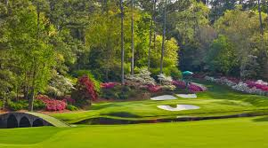

A Brief History of Golf
Golf is one of the oldest sports in the world, with roots stretching back to 15th-century Scotland. The game was reportedly played on the linksland of St Andrews as early as 1457, when King James II of Scotland tried to ban it because it was distracting soldiers from archery practice. The ban didn't stick — and thankfully so.
The modern game took shape in the 18th and 19th centuries. The Royal and Ancient Golf Club of St Andrews was founded in 1754, and the first formal rules were codified shortly after. The sport spread across the British Empire and reached the United States by the late 1800s.
Today, golf is played in over 200 countries with more than 30,000 courses worldwide. Growing up in Las Vegas — home to world-class desert courses — I had the perfect backdrop to fall in love with the sport.
The iconic 18th hole at St Andrews Old Course — birthplace of golf.

Amen Corner (Hole 12) at Augusta National — home of The Masters.
How to Play Golf
Golf is elegantly simple in concept but endlessly complex in execution. The goal: get the ball in the hole in as few strokes as possible. Here is everything a beginner needs to know:
- The Basics
- A standard round consists of 18 holes
- Each hole has a "par" — the expected strokes for a skilled player
- Pars are typically 3, 4, or 5 depending on distance
- Birdie = 1 under par | Eagle = 2 under | Bogey = 1 over
- The Equipment
- Players carry up to 14 clubs
- Woods and hybrids for long tee shots
- Irons (2–9) for approach shots
- Wedges for short game, chipping, and bunker play
- Putter — used on the green to roll the ball into the hole
- Course Zones
- Tee Box — where each hole begins
- Fairway — manicured grass between tee and green
- Rough — longer grass bordering the fairway
- Bunkers — sand traps penalizing errant shots
- Green — the putting surface surrounding the hole
- Key Rules & Etiquette
- Play at a reasonable pace — 4 hours for 18 holes is standard
- Repair ball marks on the green; replace divots in the fairway
- Stay quiet while others are hitting
- The player farthest from the hole plays first
Famous Courses Around the World
Part of what makes golf so special is its venues. From windswept coastal links to manicured desert layouts, no two courses are alike. Here are some of the most iconic — including one from my backyard.
🏭 Augusta National
Home of The Masters. Designed by Bobby Jones and Alister MacKenzie, Augusta is known for its pristine conditions and Amen Corner.
18 holes | Par 72
🏭 Pebble Beach Golf Links
Perched on the cliffs of Monterey Bay in California, Pebble Beach offers stunning ocean views and has hosted multiple US Opens.
18 holes | Par 72
🏭 St Andrews Old Course
The "Home of Golf" in Scotland. Dating back centuries, St Andrews is a pilgrimage destination for every golfer on earth.
18 holes | Par 72
🏭 TPC Summerlin — Las Vegas
My home turf. TPC Summerlin is a championship desert course in Las Vegas that hosts the PGA Tour's Shriners Children's Open every fall.
18 holes | Par 72
Want to explore the data behind professional golf? Jump to Stats & Data ↓
Golf Stats & Data
The visualization below is a live, interactive Tableau dashboard showing PGA Tour player statistics. Hover, filter, and explore the data directly.

Watch: The Beauty of Golf
Whether you're a beginner picking up a club for the first time or a seasoned player chasing a lower handicap, this video captures exactly why golf is so addicting.
Best golf shots from the PGA Tour — the world's top professionals at their finest.
Why I Love Golf
Growing up in Las Vegas, I had access to some of the best desert golf courses in the country. Golf became more than a hobby for me — it became a way to practice patience, discipline, and strategic thinking. Those same skills transfer directly to finance and investing, which is why the sport resonates so deeply with me.
Golf teaches you that no two situations are ever the same. Every lie, every wind, every green reads differently. You can't rely on a script — you have to assess, adapt, and commit. That mirrors the investment world more than most people realize.
I'm currently training for the St. George Marathon alongside my regular golf rounds. The mental toughness you build in distance running — pushing through discomfort, trusting your training — carries directly onto the course.